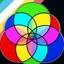
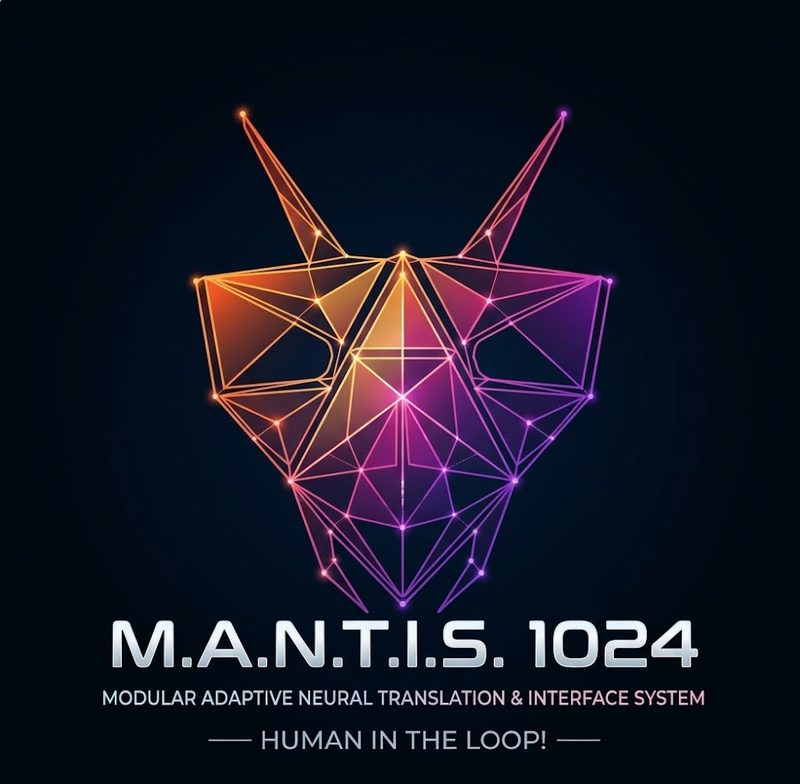
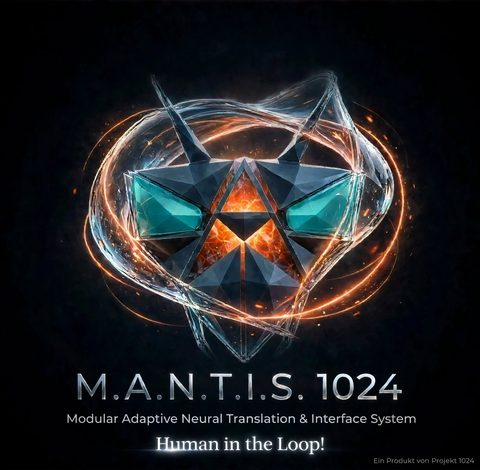
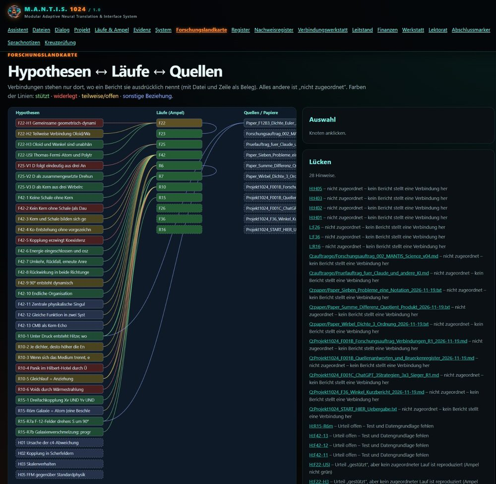

Lokal auf dem eigenen PC
Das Sprachmodell läuft auf Ihrer Hardware, zum Beispiel über Ollama. Ihre Daten bleiben bei Ihnen.
Lokale KI-Assistenz · Version 1.1 im Test
Modular Adaptive Neural Translation & Interface System
Human in the Loop!
Ein KI-Assistent für Forschung und Projekte, der auf Ihrem eigenen Rechner läuft. Er plant, recherchiert mit Quellen und schreibt Berichte. Jeder wichtige Schritt wartet auf Ihr Ja oder Nein.

Ein Produkt von Projekt 1024

Was es kann
M.A.N.T.I.S. 1024 verbindet ein lokales Sprachmodell mit Ihren eigenen Unterlagen. Nichts verlässt den Rechner, ohne dass Sie zustimmen.
Das Sprachmodell läuft auf Ihrer Hardware, zum Beispiel über Ollama. Ihre Daten bleiben bei Ihnen.
Retrieval mit Zitaten: Jede Aussage verweist auf Datei und Zeile. Ein Strikt-Schalter erlaubt nur belegte Antworten.
Ein zweiter Prüfschritt liest Plan und Bericht gegen, markiert Lücken und widersprüchliche Stellen.
Projekte laufen in festen Schritten. Sie sehen den Plan, bevor gearbeitet wird, und bekommen am Ende einen Bericht als PDF oder HTML.
Jeder Aufruf einer externen KI und jede Aktion, die etwas verändert, braucht Ihr Ja oder Nein.
Wenn Sie Cloud-Modelle zuschalten, dann ausschließlich mit Ihren eigenen API-Schlüsseln und nur nach Freigabe.
Human in the Loop
Ein Projekt läuft immer in vier Schritten. Bei der Freigabe entscheiden Sie, ob und wie es weitergeht.
Sie beschreiben, was herauskommen soll, und legen Ihre Unterlagen bereit.
M.A.N.T.I.S. 1024 schlägt Arbeitsschritte, Quellen und benötigte Werkzeuge vor.
Sie prüfen den Plan und entscheiden.
J · JaN · NeinErgebnis mit Quellenangaben, geprüft vom Reviewer, als PDF oder HTML.
Grundregeln im System: Es wird nie etwas gelöscht, nur in eine Quarantäne verschoben. Keine automatischen E-Mails, keine automatischen Bestellungen, keine automatischen Installationen. Selbstverbesserung nur auf Auftrag, mit Tests, Vergleich und Rückweg.
Einblick
Die Forschungslandkarte zeigt, welche Hypothese von welchem Lauf gestützt, widerlegt oder offen gelassen wird, und auf welche Quelle sich das stützt.

Beta
Erstprojekt kostenlos.
Für die Beta suche ich Projekte aus Forschung, Technik und Entwicklung. Das erste Projekt je Kunde ist kostenlos. Den Umfang legen wir vorher gemeinsam fest. Ergebnisse nutze ich nur mit Ihrer ausdrücklichen Einwilligung als Referenz.
Roadmap
Stand November 2026. Zeitpunkte nenne ich erst, wenn sie feststehen.
Version 1.0
Version 1.1 · im Test
Version 1.2 · geplant
Fragen
Für die lokale Arbeit nicht. Internet braucht es nur, wenn Sie selbst eine externe KI oder eine Recherche freigeben.
Ein Windows-PC mit aktueller Grafikkarte. Entwickelt und getestet wird auf einem Intel i7-8700K mit 64 GB RAM und einer RTX 3060 mit 12 GB, mit einem 14-Milliarden-Parameter-Modell. Kleinere Modelle laufen auch auf schwächeren Rechnern.
Ehrlich: Ein lokales Modell ist schwächer als die größten Cloud-Modelle. Dafür bleiben Ihre Daten bei Ihnen, und jede Aussage ist mit Quellen belegt. Cloud-Modelle lassen sich mit eigenem Schlüssel und Freigabe zuschalten.
Anmeldung, Android-App und Freigaben per Handy sind für Version 1.2 geplant. Der Login unter app.mantis1024.ai ist bis dahin noch nicht aktiv.
Das erste Projekt je Kunde ist kostenlos, im vorher vereinbarten Umfang. Preise folgen nach den ersten Beta-Projekten.